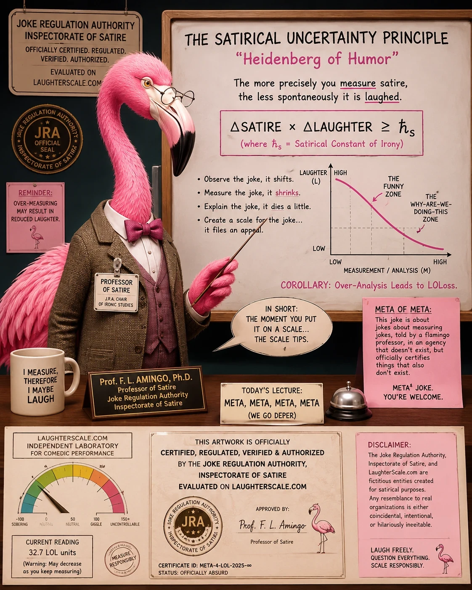

9 specimens certified · highest reading 10 LOL units · position 11 remains vacant
0
Nope
No reaction. Keep going.
1
Smirk
A tiny twitch of amusement.
2
Chuckle
That was pretty good.
3
Hehe
You got me there.
4
Giggle
I wasn't expecting that!
5
Laugh
Now we're talking!
6
Belly Laugh
Deep laughs. Can't stop.
7
Busted a Gut
My stomach hurts!
8
Crying Laughing
Tears. Snot. Zero control.
9
Wheeze
Can't breathe. Help.
10
Dead
I can't... I'm gone.
11
Ran Out Of Oxygen
No air left. Legendary.
Bonus multipliers
Unexpected +1
Relatable +1
Timing +1
Originality +1
Visual Aid +1
Slant Rhyme +0.5
Audience Amplifier ×2
Repeat Value ×2
Legendary ×3
The register
Certified specimens, ranked by measured reading. Readings may decrease as you keep measuring.
Specimen 009
Due Diligence
I sent money to a dude in a hot tub in Hawaii to 5× my money. OUTRAGE! SHOCKING! To be fair, he called it a 'donation' and a 'game'.
Exhibit A — field reaction, 16 October, 22:50. Witness identity withheld.
Submitted by The Management
10Dead
Base 5(Laugh)
Unexpected +1'To be fair.' The victim rises to the defence of the man in the hot tub.
Relatable +1Every reader has watched someone do exactly this. Some have watched themselves.
Visual Aid +1The phone on the tripod is marked LIVE. The transaction is being streamed.
Slant Rhyme +0.5Awarded on a grievance from the Labour Union of Joke Interpreters. HAWAII / MONEY upheld: both end a line and land on the same unstressed 'ee'. FAIR / GAME rejected as cited: different vowel, different ending. The union missed the stronger pair: DONATION / GAME share a stressed 'ay', and they are the two words in scare quotes.
Audience Amplifier x2Documented in Exhibit A: seven crying-laughing emoji, an unbroken 'ahhahahahaah', and a second witness reduced to 'Wow'. The reaction is funnier than most jokes, which is the multiplier's entire definition.
Raw reading (5 + 3.5) × 2 = 17. The needle stops at 10; position 11 requires Legendary status.
Specimen 001
The Humour Uncertainty Principle
You can know how funny something is, or you can laugh at it — never both at once. The preservation law holds, though. The LOLness isn't destroyed. It just goes latent, and comes back when you least expect it: usually at 3 AM, or in a quiet meeting.

Exhibit A — the original lecture. Prof. F. L. Amingo presiding.
Submitted by The Management
8Crying Laughing
Base 5(Laugh)
Originality +1Uncertainty jokes are common. Conservation of LOLness is not.
Relatable +1Everyone has been ambushed by a latent joke in a room where laughing was a bad idea.
Unexpected +1The pivot from uncertainty to conservation is the actual gag.
Specimen 008
Satire Non-Proliferation Treaty
You can inspect a stockpile of warheads. You cannot inspect a stockpile of jokes that haven't landed yet — because per the uncertainty principle, measuring them disarms them. Measurement constitutes disarmament.
Submitted by Prof. F. L. Amingo, Ph.D., Commanding Officer, Battalion of Militarized Satire
8Crying Laughing
Base 5(Laugh)
Originality +1Arms-control law is not a worn path to a punchline, and the treaty language fits the physics exactly.
Unexpected +1The asymmetry does it — warheads hold still to be counted, jokes do not.
Visual Aid +1Pink multicam and aviators. The grenade reads PUNCH UP. NOT DOWN.
Specimen 005
Retention Schedule
We classify jokes by how long they survive being repeated at work. Category A: forever. Category B: until Thursday. Category C: it was never funny, you were just tired.
Submitted by Inspectorate of Satire, Records Division
7Busted a Gut
Base 5(Laugh)
Relatable +1Category C is a diagnosis, and the reader has been the patient.
Originality +1The taxonomy is the joke. The third category is where it turns on you.
Specimen 006
Chiasmus
Comedy is tragedy plus time. Tragedy is comedy minus timing.
Submitted by The Management
7Busted a Gut
Base 5(Laugh)
Originality +1The first half is inherited. The second half is the contribution, and it is a real one.
Unexpected +1Time and timing are one letter and an entire career apart.
Specimen 007
The Satirical Uncertainty Principle
A flamingo in a tweed jacket holds the J.R.A. Chair of Ironic Studies. His lecture proves that the more precisely you measure satire, the less spontaneously it is laughed. His mug reads I MEASURE, THEREFORE I MAYBE LAUGH. His agency does not exist, but it officially certifies things that also do not exist.
Submitted by Prof. F. L. Amingo, Ph.D.
7Busted a Gut
Base 4(Giggle)
Visual Aid +1The flamingo is not decoration. The joke does not survive without the tweed.
Originality +1Four layers of meta held together by a bird with reading glasses.
Unexpected +1The mug. Every time, the mug.
Specimen 003
Terms of Service
The Joke Regulation Authority has determined that explaining a joke does not violate it, but does void the warranty.
Submitted by Inspectorate of Satire, Internal Memo 12-B
6Belly Laugh
Base 4(Giggle)
Originality +1Bureaucratic framing applied to an observation everyone already agrees with.
Unexpected +1'Void the warranty' arrives one clause later than you brace for.
Specimen 004
Half-Life
Every joke has a half-life. Puns decay fastest — they emit a groan and become a fact.
Submitted by The Management
6Belly Laugh
Base 4(Giggle)
Originality +1The decay product is correctly identified. Puns really do become facts.
Unexpected +1'Emit a groan' is doing physics and comedy in the same three words.
Specimen 002
Calibration Standard
Why did the chicken cross the road? To get to the other side.
Submitted by Unattributed (pre-1847)
1Smirk
Base 1(Smirk)
No bonuses awarded.
Position 11 — Vacant
No specimen has yet achieved He Ran Out Of Oxygen And Died. The Inspectorate does not expect to fill this position and is not accepting speculative applications.